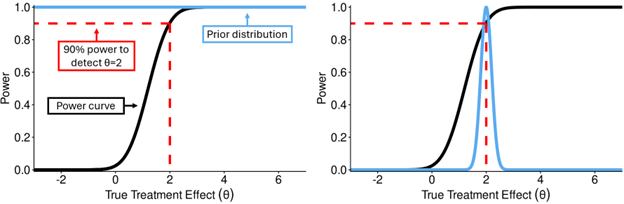
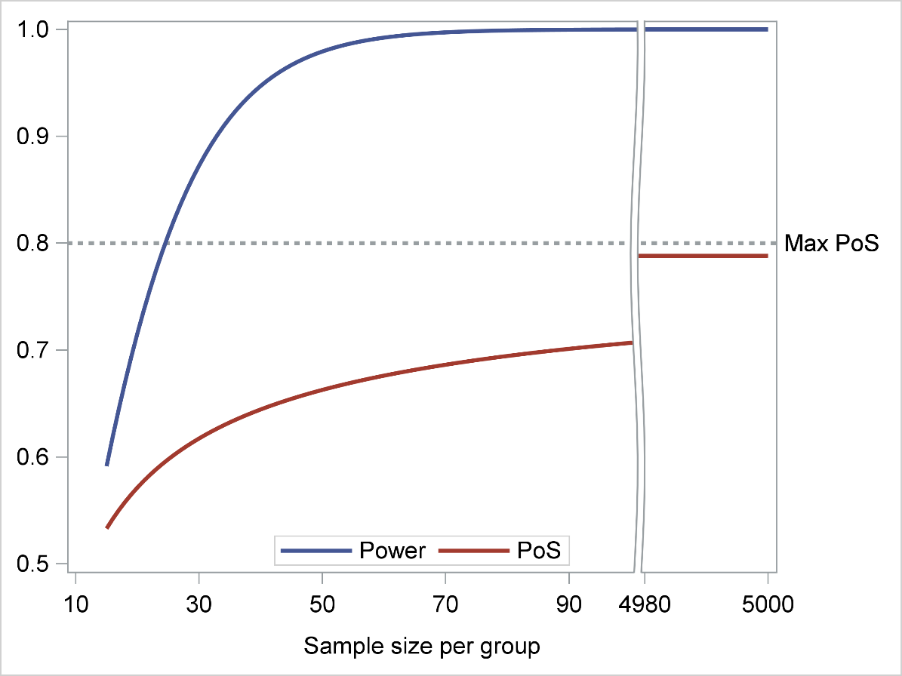
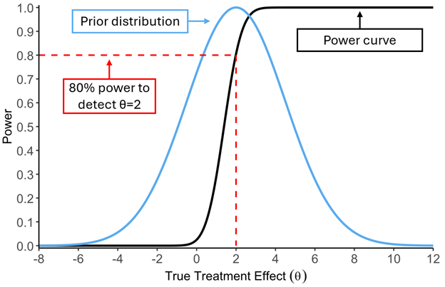
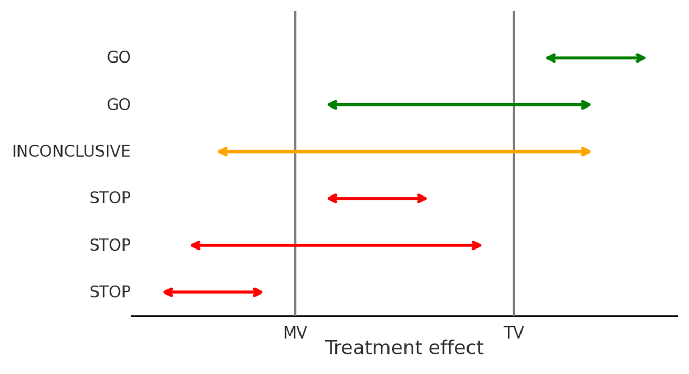
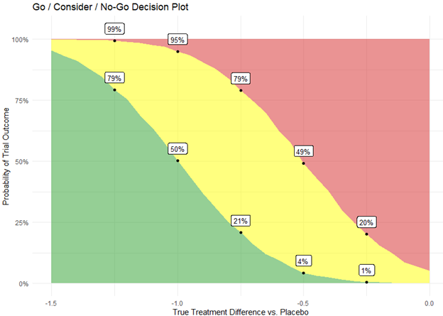
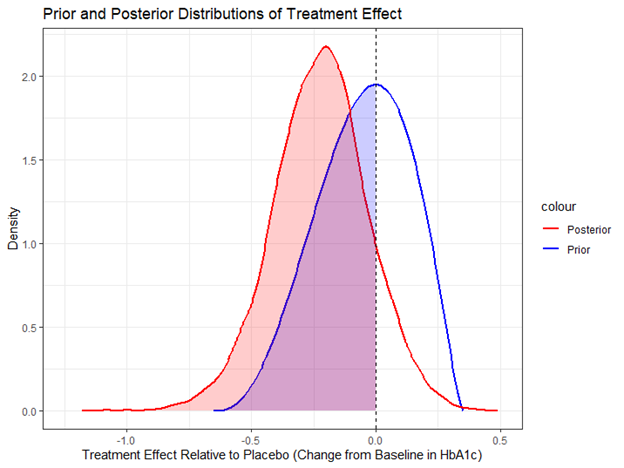
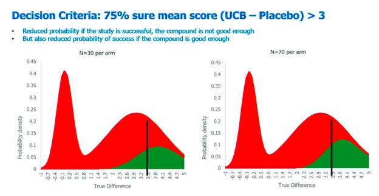

Best Practices for Communicating Probability of Success to Non-Statisticians in Drug Development
1. Introduction
Communicating the probability of success (PoS) effectively to non-statisticians requires more than technical accuracy, it demands understanding your audience’s decision-making context, their comfort with uncertainty, and their need for actionable insights. This document provides a systematic approach to bridging the gap between statistical rigor and practical communication.
While PoS serves as a vital measure for drug development decision-making, its inherent statistical nature can pose a communication challenge. The complexities of probability, statistical models, and data interpretation may not be readily grasped by individuals without a strong statistical background. This gap in understanding can lead to misinterpretations, misaligned expectations, and ultimately, suboptimal decision-making, resulting in misuse of resources and delayed drug development.
Document Structure and Usage
This document is organized as follows:
Section 2 discusses the importance of defining success prior to PoS estimation
Section 3 discusses differences between power and PoS
Section 4 offers suggestions on how best to communicate PoS
Section 5 looks at additional more advanced topics than a single PoS estimate
Section 6 contains appendices with extended resources
Key Terms and Definitions
| Term | Definition |
| Conditional Probability | Likelihood of an event given specific conditions |
| Consider Region | Inconclusive results between MV and TV |
| Go Region | Results meet or exceed TV with the prespecified level of evidence |
| Minimum Value (MV) | The lowest acceptable outcome for success |
| No Go Region | Results below MV |
| Probability of Success (PoS) | The likelihood of achieving a successful outcome |
| Statistical Power | The probability of detecting a true effect if it exists |
| Target Value (TV) | The desired optimal outcome |
| Unconditional Probability | Likelihood of achieving objectives across a range of scenarios |
2. Understanding and Defining Success
Success in drug development is complex, partly because it often spans multiple disciplines such as clinical, regulatory, operational, and commercial, and partly because the concept of success evolves as a drug moves through the development process.
Traditionally, statisticians focused on ensuring robust design for regulatory studies by utilizing statistical techniques to design an appropriately powered study to detect a meaningful effect supporting regulatory approval.
More recently, there has been greater focus on interim analyses, decision rules, and strategic-level involvement considering entire development programs with interconnected decision points and success criteria.
Statisticians are increasingly involved at a strategic level, extending beyond individual clinical trials by considering the entire development program with different decision points and success criteria required at each step. By considering how these criteria and decisions depend on each other, statisticians play a crucial role in supporting a project or development team to define, quantify, and maximize success.
Different Types of Success
Different stakeholders will have different ideas of what success might entail. To ensure alignment among stakeholders, it is essential to define success criteria clearly. These criteria may vary depending on the perspective of different stakeholders, such as clinical teams, regulatory bodies and investors. Key success criteria include:
Clinical Success
Efficacy: Demonstrating a meaningful therapeutic effect, including both statistical significance and clinically relevant benefit
Safety: Ensuring an acceptable benefit-risk profile
Regulatory Success
- Approval Readiness: Meeting the requirements of regulatory agencies, including alignment with expectations for efficacy and safety
Operational Success
Clinical Operations: Achieving timely recruitment and data availability for interim or final analyses, especially when strategic or competitive timelines are involved
Manufacturing: Ensuring the drug can be produced to specification
Market Success
Market Potential: Aligning with a Target Product Profile (TPP) that supports sales targets and market share
Payer Value: Demonstrating clinical and economic value that supports payer expectations and reimbursement strategies
These success criteria should be combined in a stepwise fashion, for example:
Phase 3 study success (Efficacy × Safety): Obtaining statistically significant and clinically relevant results that support the drug effectiveness in one or multiple studies, with a proportionate and acceptable safety profile in the context of the drug therapeutic benefits.
Regulatory success (Efficacy × Safety × Regulatory): Meeting phase 3 study success criteria and having drug approved by target regulatory agencies.
Market Success (Efficacy × Safety × Regulatory × Market): Regulatory success whilst also meeting TPP targets.
Sometimes the different types of success are inherently linked and shouldn’t be assumed as independent success probabilities that can be multiplied together.
Balancing diverse success objectives to design an optimal study or development program requires input from multiple stakeholders and a clear understanding of the interrelationships among key factors (ICH E8(R1)).
Success at the Individual Study Level
At the individual study level, success is typically defined using one of the following approaches:
Statistically significant difference favoring the test treatment over the reference treatment (i.e., rejection of the null hypothesis of no test treatment effect). This is the most commonly used definition of study success, particularly in Phase 3 studies.
- A more stringent definition of success is sometimes applied, requiring not only statistical significance but also that the point estimate of the treatment difference meets a predefined threshold for clinical relevance.
“High probability” of a treatment difference above target thresholds set based on clinical and/or commercial considerations. This approach is often used in early phase studies (e.g., proof of concept) to inform the decision to proceed with the development of the drug.
3. Power and PoS
Most non-statisticians are familiar with statistical power in the context of clinical trials. It’s related to PoS but differs in how it treats uncertainty—this is effectively the difference between conditional and unconditional probability.
Statistical Power (Conditional Probability): Statistical power is the (conditional) probability of achieving statistical significance IF the true, underlying effect of the treatment is exactly equal to a specific value assumed during the design phase (the “target effect size”).
It’s important to advise non-statisticians that, while focusing on a single target effect size may be conceptually simpler, it has limitations. Power is highly sensitive to the accuracy of the assumed effect size and if the true underlying effect size is smaller, the actual chance of success will be lower than the calculated power suggests.
PoS (Unconditional Probability/Assurance): In contrast, PoS incorporates uncertainty into the estimate, which is a key point to communicate to non-statisticians. PoS, often referred to as average power or assurance (O’Hagan, 2005), accounts for a range of plausible true effect sizes and their associated likelihoods, based on prior knowledge or beliefs.
This prior knowledge about the plausible range and likelihood of the true effect size is formally captured in what is known as a prior distribution (FDA Guidance for the Use of Bayesian Statistics in Medical Device Clinical Trials, 2010). This prior distribution is typically informed by data from earlier-phase studies (e.g., Phase 2), relevant published literature, results observed with similar drugs, or expert opinion. The PoS is then calculated by essentially averaging the conditional power across possible effect sizes represented in the prior distribution, with conditional power values weighted by the probability assigned to that specific effect size by the prior.
Illustrative Example: PoS as Weighted Average
To demonstrate PoS as average power, consider this simplified example with discrete values:
| True Treatment Effect | Prior Probability | Power |
| -1 | 5% | ~0% |
| 0 | 20% | 2.5% |
| 1 | 25% | 28.8% |
| 2 | 45% | 80.0% |
| 3 | 15% | 98.8% |
Average Power (PoS) = 58.3%
Interpretation Guide:
Column 1: Different possible true treatment effects
Column 2: How likely we think each scenario is (based on prior evidence)
Column 3: How well our study would perform if that scenario were true
Bottom Row: Our overall expected success rate (PoS)
Key Insight: Even though we have 80% power for our target effect of 2, our averaged PoS is lower (58.3%) because we acknowledge other plausible treatment effects.
Key Properties of PoS:
Impact of Prior Uncertainty: The precision of prior distribution significantly influences the PoS.
Uninformative Prior (e.g., very small Phase 2): When existing data is limited and uncertain (wide confidence intervals of treatment effect), the prior distribution is spread out. The resulting PoS for the next trial might be close to 50%, reflecting that the existing evidence does not strongly support either success or failure, regardless of how large the next trial is.
Informative Prior (e.g., large, convincing Phase 2): If prior data is strong (narrow confidence intervals of treatment effect), the prior distribution is sharply focused. In this case, the PoS approaches the value of traditional power, reflecting greater confidence in the expected effect size.
Example: A Phase 3 trial is planned to have 90% power to detect a treatment effect of θ=2 If we had a very small Phase 2 our prior would be uninformative and flat (left figure),
Prior results were encouraging with wide confidence interval suggesting a 20% chance the true effect is actually zero or negative (e.g. p-value of 0.2). In a very large Phase 3 trial, you cannot eliminate the 20% chance that the treatment is ineffective. Therefore, the PoS for the next study is capped at 80% (1 - 0.20), regardless of sample size.

PoS Has a Ceiling (Boundedness): This is a critical difference from traditional power. Power can approach 100% if the trial is infinitely large (assuming the true effect is not zero). However, PoS is bounded – it cannot exceed the prior probability that the treatment effect is favorable (e.g., greater than zero, or a minimally important difference).
Example: Prior results were encouraging with wide confidence interval suggesting a 20% chance the true effect is actually zero or negative (e.g. p-value of 0.2). In a very large Phase 3 trial, you cannot eliminate the 20% chance that the treatment is ineffective. Therefore, the PoS for the next study is capped at 80% (1 - 0.20), regardless of sample size.

4. Approaches to effectively communicate PoS
Overlay Plots
Overlay plots are often the most intuitive visual aids for communicating PoS. They plot two curves on the same graph:
The prior distribution, representing beliefs about the probability of each true effect size
The power curve, showing the probability of trial success conditional on each possible effect size
This plot visually combines prior belief with expected trial performance. If the prior peaks in a region where power is high, the PoS will be high. Conversely, if the prior suggests the effect is likely small (where power is low), the PoS will be low. To enhance interpretability, a reference line can be added to represent the traditional power calculation (e.g., 80% power at an assumed effect size of 2 in the example). This helps bridge the gap between power and PoS.

Sample Size Impact Visualization
During study design, joint graphical representation of power and PoS across varying sample sizes can be valuable for team discussions. This visualization demonstrates how sample size adjustments affect power and PoS differently due to the ceiling effect inherent in PoS.
In some scenarios, increasing sample size may substantially increase power but yield only modest gain in PoS, raising questions about the justification for a larger study.
Additional Statistics
PoS is a single summary number (average power). However, the prior distribution implies a whole distribution of possible power values for the trial. Summarizing this distribution provides richer insights:
Median Prior Power: Answers the question: “Based on our prior beliefs, what’s the power level we have a 50% chance of meeting or exceeding?”. This is useful if the average PoS might be skewed by unlikely scenarios (e.g., a small chance of a very large effect boosting the average).
Other Quantiles (e.g., 25th Percentile): Reporting a lower quantile gives a more conservative perspective, helping understand the downside risk – the plausible lower range for the trial’s power given the uncertainty.
5. Additional Topics
Minimum Value (MV), Target Value (TV), and Go/No-Go/Consider Regions
In clinical trials, particularly in Phase 2 trials, defining clear success criteria is crucial for making informed decisions about whether to continue developing a treatment. The Minimum Value (MV) is the lowest acceptable outcome for a trial to be considered successful, while the Target Value (TV) is the desired optimal outcome.
These values are determined with input from various experts, including clinical, regulatory, and commercial teams, and are documented in the target product profile (TPP). Effectively communicating how likely the current trial is to meet these values is key to effective trial design.
Communicating MV/TV Probabilities
During design, it’s important to communicate the probabilities of exceeding MV and TV. Using graphs to show how the probability of exceeding MV and TV changes with different sample sizes can make these concepts more understandable.
Go/No-Go/Consider Regions
Go/No Go/Consider Regions are used to categorize the trial outcomes based on the MV and TV. Effective communication of these regions is very important, using graphical examples to illustrate the Go, No Go, and Consider regions can help non-statisticians visualize and understand these concepts better.
Define Regions (Example):
Go Region: Results strong enough that we’re confident (e.g. 80%+ probability) the drug exceeds our MV
No-Go Region: Results weak enough that we’re confident (e.g. 80%+ probability) the drug falls short of TV
Consider Region: Results in the middle ground between MV and TV where we can’t confidently place the drug in either category—more data or different approaches may be needed
One example of scenarios falling into Go, No Go and Consider regions can be seen in figure below (Fewer et al, 2016).

Graphical Approaches: Lalonde Plots
Go, No Go and Consider region plots (Lalonde plots or wave plots) allow the study team to explore their study design over a range of treatment effects. They are particularly helpful communicating a range of treatment effects with non-statisticians as they:
Provide Visual Clarity: The plot uses clear colour-coded bands (green, yellow, red) to represent different decision outcomes. This makes it easy to understand at a glance whether a treatment is likely to be successful (Go), needs further consideration (Consider), or is unlikely to be effective (No Go).
Intuitive to Understand: The Y-axis shows the probability, which is a familiar concept even to those without a statistical background. Seeing how these probabilities change with different treatment effects on the X-axis helps in understanding the overall effectiveness.
Facilitates Decision Making: By categorizing outcomes into Go, Consider, and No Go, the plot provides a straightforward way to interpret the results of extensive and complex simulations over a range of treatment effects.
Easy to communicate: These plots are excellent tools for communicating findings to stakeholders who may not have a deep understanding of statistics.
Phase 2 Diabetes Example: Consider a diabetes study with change in HbA1C as the primary endpoint. The study has 32 patients per arm in the active and placebo arms and a standard deviation of 1.2%. The probability has been calculated based on 10,000 simulations per treatment effect with the MV and TV equal to -0.5% and -1% respectively.
When communicating with non-statisticians, highlight the following:
The x-axis shows the difference in treatment effect between the new treatment and a placebo. Lower values means the treatment is more effective.
The y-axis shows the probability of the treatment effect falling into one of the three categories.
The coloured bands:
The green band “Go” represents the probability that the observed treatment effect is < -1%.
The yellow band “Consider” represents the probability that the observed treatment effect is <= -0.5% and > -1%.
The red band “No Go” represents the probability that the observed treatment effect > -0.5%.
Lalonde plot (Fewer et al, 2016):

Key Interpretations:
When the true treatment effect relative to placebo is a 1% improvement or greater then the probability of a Go decision is at least 50%.
When the true treatment effect relative to placebo is 0.5% improvement or less then the probability of a No Go decision is at least 50%.
When the true treatment effect relative to placebo is an improvement between 0.5% and 1% then the probability of a Consider decision is approximately 45%.
Using Probability of Success in Interim Analysis
Measures conceptually similar to power and PoS (defined as average power) can play an important role in interim analyses by providing a quantitative estimate of the likelihood of achieving the trial’s objectives based on the available data.
Conditional power can be seen as an analogous measure of power in an interim analysis setting. It is defined as the probability of rejecting the null hypothesis (e.g., of no test treatment effect) given the interim results and assuming a specific true effect size for the remainder of the trial.
Predictive power or predictive probability of success (PPoS), if success is defined simply as the rejection of the null hypothesis, is an analogous measure of PoS in an interim analysis setting. It is defined as the conditional power averaged over a range of treatment effects, with weights based upon current belief about the effect size, represented by its posterior distribution.
Unblinded IA Example: Interim Analysis in a Diabetes Trial
Consider a Phase 2 diabetes trial evaluating a new drug’s effect on HbA1c reduction. An interim analysis is planned after half the patients have completed the study. The initial PoS for achieving a clinically meaningful reduction in HbA1c was estimated to be 60%.
After the interim analysis, the observed effect size is larger than expected, leading to an updated PoS of 80%. This information can be communicated to non-statisticians through distribution plots showing how the posterior distribution has shifted following the interim data.

IDMC Communication
The above considerations apply to an unblinded setting, where the information about treatment assignment is available. Typically, in case of interim analyses, only the Data Monitoring Committee (DMC) members are unblinded. A different situation is that of a blinded observer only knowing the DMC recommendation to continue a study after an interim efficacy and/or futility analysis. If the pre-specified stopping rules are known, and assuming that the DMC adhered precisely to these rules, the PoS calculated before the trial can be updated taking into account DMC recommendation.
6. Appendices
Appendix A: Interactive Tools and Resources
To support discussions and make PoS communication more effective, statisticians can leverage interactive tools such as:
R Shiny Applications:
Tools like GOahead from BMS (https://goaheadtool.shinyapps.io/GOaheadv10/) allow real-time exploration of PoS under different assumptions
Custom internal applications for organization-specific calculations
Interactive sensitivity analysis dashboards
Commercial Solutions:
- Various software packages offer PoS calculation and visualization capabilities
Custom Dashboards:
- Organization-specific tools that integrate with internal data systems and decision processes
Appendix B: Additional Examples
Example 1: Early Phase PoS (Smart, 2025)
This example highlights how simulation and graphics can help convey the impact of priors, study design, and decision criteria on PoS.
The figure below helps convey probabilities based on a mixture prior, using an early-phase trial scenario. Here, the prior about the true treatment effect is bimodal—centered at 0 (indicating no effect) and 3 (indicating a clinically meaningful benefit). The decision criterion requires being 75% confident that the mean difference between UCB and placebo > 3.
Two panels compare the probability distribution of observed treatment effects for different sample sizes (N=30 vs. N=70 per arm):
The green shaded region represents the area under the prior distribution where the study is expected to meet the decision criterion (i.e., PoS).
The red region represents the area where the trial is expected to fail to meet the success criterion.
Key Communication Insights:
With 30 patients per arm, the probability mass is slightly wider; there is considerable chance of both success and failure across the prior distribution.
With 70 patients per arm, the narrower distribution leads to slightly more precise predications—success is more likely if the compound truly works, but also less likely if it doesn’t.
This visualization clearly shows how the PoS is a function of both prior and sample size—and how increasing N reduces ambiguity but doesn’t always increase PoS
Such plots help decision-makers understand that increasing sample size does not always increase the PoS—especially when the prior includes a realistic chance of failure. It also underlines the importance of the prior, and how decision criteria (e.g., “75% sure > 3”) interact with study design and assumptions.

Appendix C: Addressing Common Questions and Misconceptions
Understanding frequent misunderstandings allows statisticians to proactively address them during communications.
1. “PoS and Power are the same thing”
The Issue: Non-statisticians often assume that if a study is designed with 80% power, the PoS is also 80%.
Why It Occurs: Both are expressed as percentages and relate to study success probability.
How to Address: “Power and PoS both relate to our chances of success, but they differ in an important way. Power asks: ‘If the true effect is exactly what we assumed in our design, what’s our chance of success?’ PoS asks: ‘Considering all the different effects the drug might actually have—based on our current knowledge—what’s our realistic chance of success?’
Visual Aid: Show a simple table comparing power at different assumed effect sizes with the weighted average (PoS).
2. Misconception 2: “Low PoS means the drug doesn’t work”
3. Misconception 3: “Bigger trials always increase PoS”
4. “Why isn’t our PoS higher if we designed the study with 80% power?“
5. “Can we increase the PoS by changing the study design?”
6. “What if the PoS is wrong?”
7. “How do we explain this PoS to our board/investors?”
8. “This PoS seems too conservative/optimistic compared to my clinical intuition”
9. “Why did PoS change from our last calculation?”
Appendix D: References
Core References
Frewer, P., Mitchell, P., Watkins, C., Matcham, J. Decision-making in early clinical drug development. Pharm Stat. 15(3) (2016) 255-63. https://doi.org/10.1002/pst.1746
Lalonde RL, Kowalski KG, Hutmacher MM, et al. Model-based Drug Development. Clinical Pharmacology & Therapeutics 2007; 82:21–32.
ICH E8(R1), https://database.ich.org/sites/default/files/E8-R1_Guideline_Step4_2021_1006.pdf
Temple JR, Robertson JR. Conditional assurance: the answer to the questions that should be asked within drug development. Pharm Stat. 2021 Nov;20(6):1102-1111. doi: 10.1002/pst.2128.
Dallow N, Best N, Montague TH. Better decision making in drug development through adoption of formal prior elicitation. Pharm Stat. 2018 Jul;17(4):301-316. doi: 10.1002/pst.1854.
Saint-Hilary G, Robert V, Gasparini M. Decision-making in drug development using a composite definition of success. Pharm Stat. 2018 Sep;17(5):555-569. doi: 10.1002/pst.1870.
U.S. Food and Drug Administration. The Use of Bayesian Statistics in Medical Device Clinical Trials: Guidance for Industry and Food and Drug Administration Staff, 2010. http://www.fda.gov/MedicalDevices/DeviceRegulationandGuidance/GuidanceDocuments/ucm071072.htm
Morita S, Thall PF, Müller P. Evaluating the Impact of Prior Assumptions in Bayesian Biostatistics. Stat Biosci. 2010 Jul 1;2(1):1-17. doi: 10.1007/s12561-010-9018-x.
Assurance in clinical trial design · A. O’Hagan, John W. Stevens, M. Campbell · Published 1 July 2005 · Medicine · Pharmaceutical Statistics
Jiang, C. et al. Decision-making criteria and methods for initiating late-stage clinical trials in drug development from a multi-stakeholder perspective: a scoping review. Clin. Pharmacol. Ther. 117, 978–988 (2025)